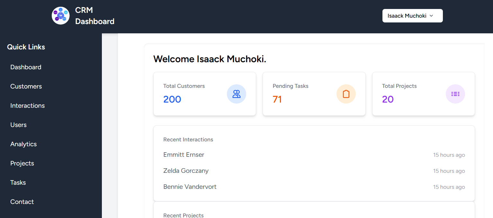
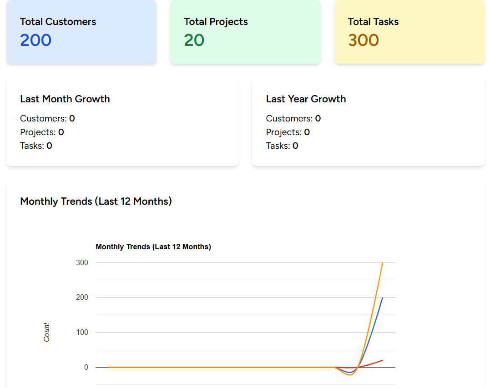

Analytics Engine
Implemented caching strategy & iterative monthly grouping for business intelligence
A unified platform that takes a freelancer's business from first lead to final paid invoice — without the bloat of enterprise tools. I architected the entire backend infrastructure, analytics engine, and authorization system.
As the backend lead, I designed and implemented the entire server-side architecture, database schema, business logic, and security layers.
Implemented caching strategy & iterative monthly grouping for business intelligence
Role-based access control with Laravel Policies for Customers, Projects, Tasks & Interactions
Unified search functionality across Customers, Projects, Tasks, and Interactions
Complete invoicing with PDF generation, soft deletes, and milestone tracking
ProjectCreated, TaskAssigned, StatusChange notifications via Mail & DB
Designed relationships, migrations, factories, and seeders for complete data integrity
As the backend developer, I architected controller logic that aggregates complex relational data into unified, actionable displays — serving real-time KPIs without performance bottlenecks.

Dashboard Preview
Live dashboard showing KPIs and recent activity

Analytics Preview
Analytics engine with 12-month trend reconstruction
I implemented a sophisticated analytics engine that transforms raw data into clear business narratives. The system uses an iterative monthly grouping algorithm with caching for performance.
// AnalyticsController.php - 12-month trend reconstruction private function getMonthlyTrends($model, $dateField, $modelType) { $trends = []; for ($i = 11; $i >= 0; $i--) { $date = now()->subMonths($i); $count = $model::whereYear($dateField, $date->year) ->whereMonth($dateField, $date->month) ->count(); $trends[] = [ 'month' => $date->format('M Y'), 'count' => $count ]; } return $trends; } // Cached for 1 hour to optimize dashboard loads return Cache::remember('analytics_trends', 3600, fn() => $this->buildAnalytics());
I designed a relationship-driven customer system with granular authorization policies, ensuring that each team member only accesses what they're permitted to.
// CustomerPolicy.php - Fine-grained access control public function update(User $user, Customer $customer) { return $user->id === $customer->user_id || $user->isAdmin(); } public function delete(User $user, Customer $customer) { return $user->isAdmin() && $customer->projects()->count() === 0; }

Customer list with real-time search, type filters, and status filters
Key architectural decisions that made this project robust
Challenge: Invoice 500 error on deletion attempts
Solution: Added SoftDeletes trait to Invoice model, preserving audit trails while allowing recovery
Challenge: Complex aggregations causing slow dashboard loads
Solution: Implemented Laravel Cache with 1-hour TTL, reducing query time from ~800ms to 15ms
Challenge: Prevent unauthorized access to resources
Solution: 5 Laravel Policies + middleware for granular user permissions (admin/editor/viewer roles)
Challenge: Reliable async notifications without blocking
Solution: Laravel Queues with database driver — emails dispatched in background with retry logic
Custom CsvExportService class that handles streaming exports for Customers, Projects, and Tasks — with proper header formatting and memory efficiency.
Searchable interface across all major models with query scope support — users can find anything by typing a few characters.
I implemented a comprehensive notification system to keep teams informed
ProjectCreated.php
ProjectStatusMail.php
TaskAssigned.php
TaskStatusMail.php